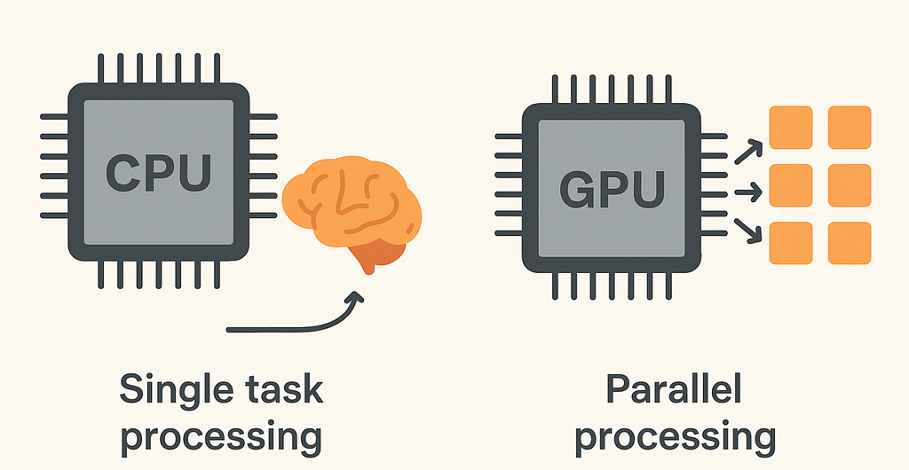

GPU?
By Arunkumar Velusamy · Sep 2025
Start with Core. What is core?
There are genius people talk about single core , dual core, quad core and multi-core. Let start from here,
Single Core
Only one core was responsible for all processing.It could execute one instruction at a time (per clock cycle).It used sequential execution: step-by-step, one task at a time.
Multi-Core
More than one core. Each core can work simultaneously on a separate task or split a larger task.This allows parallel processing, which is faster and more efficient.
Problem with Single core
Chipmakers kept making CPUs faster by increasing their clock speed (e.g., from 1 GHz to 3+ GHz). But higher speed produced more heat.You couldn't go much faster without overheating or using too much power.
Solution
Instead of one core going faster, Added more cores to do more in parallel.
What Is Clock Speed?
Clock speed (also called clock rate) is the rate at which a computer's processor (CPU or GPU) completes cycles — i.e., it tells you how many operations a processor can do per second. It is measured in:
- Hertz (Hz) = 1 cycle per second
- Gigahertz (GHz) = 1 billion cycles per second
What's a Cycle?
A clock cycle is like a tick of a metronome. On each tick, the processor can do something — like:
- Fetch an instruction
- Decode it
- Execute it
- Write back a result
One instruction might take 1 or several cycles, depending on complexity and CPU architecture.
Impact on Machine Learning
Matrix and vector operations (common in ML) benefit hugely from parallelism.Modern ML libraries (like TensorFlow, PyTorch) are optimized to use all available cores — sometimes even offloading to GPUs (which are massively parallel).
Multi-Core CPUs Are Still "Sequential in Nature". What's True?
- Each core in a CPU executes instructions sequentially — one instruction at a time.
- But with multiple cores, you can run multiple sequences (threads) in parallel.
- So even though you have parallelism at the thread or process level, CPUs don't do true parallel math operations at the scale or structure that ML needs.
Limitation for Deep Learning
Deep learning tasks (like training neural networks) involve operations like:
- Matrix multiplication
- Dot products
- Tensor reshaping
These require hundreds of thousands to millions of the same operation done simultaneously.
CPUs (even multi-core) are not designed for this kind of massively parallel math
- A 4-core or 8-core CPU can process 4–8 things in parallel, maybe with 2 threads per core.
- But a GPU can execute tens of thousands of operations in parallel (e.g., NVIDIA A100 has ~70,000 CUDA cores).

What makes GPU different from CPU?
- CPUs are designed for general-purpose, flexible, sequential tasks.
- GPUs are designed for highly parallel, repetitive math operations — like those used in graphics rendering and machine learning.
- The key difference lies in architecture: how their transistors are allocated and optimized.
Note : SIMD (Single Instruction, Multiple Data) is a parallel computing technique where a single CPU instruction operates on multiple data points simultaneously
CPU
Optimized for single-thread performance. Large cache, deep pipelines, sophisticated branch prediction.Good at handling many different types of tasks, including ones with a lot of logic.
GPU
Optimized for doing the same math operation on large amounts of data (e.g., multiplying numbers in a matrix).Minimal control logic — more transistors devoted to raw arithmetic operations.Executes thousands of threads in parallel using SIMD architecture.
Why Can't CPUs Just "Add More Cores Like a GPU"?
Physical Limits. CPUs are complex: each core has lots of control circuitry, branch prediction, caching, pipelining, etc.This takes up a lot of chip area and power.You can't just fit 1000 CPU cores on a chip — it's too costly, hot, and inefficient.
Matrix multiplication is fundamental to machine learning
- CPU: Performs the multiplication row-by-row or chunk-by-chunk.
- GPU: Launches thousands of threads, each doing a small multiplication at the same time.
This is why training a neural network on a CPU could take hours or days, but on a GPU, it could take minutes.
Assign the task to GPU
It does not happen automatically. we must explicitly tell the CPU to offload a task to the GPU. The operating system and high-level frameworks know how to offload work to the GPU, but you must write or use library/software that supports GPU offloading
Final Note
A GPU runs thousands or millions of tasks in parallel, all with the same instruction but on different data. It has thousands of cores, which are less powerful individually than CPU cores but are highly efficient for parallel computing. CPU is designed to perform heavy, sequential tasks. While a multi-core CPU can handle more multitasking than a single-core. But It can not have thousands of cores.A single CPU core is significantly more powerful and performant than a single GPU core.